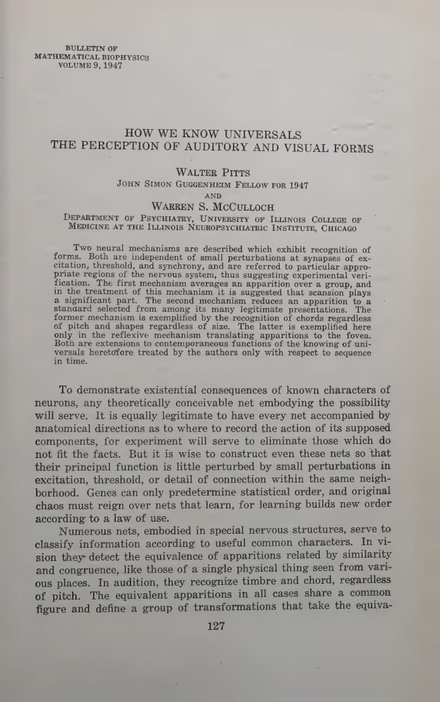
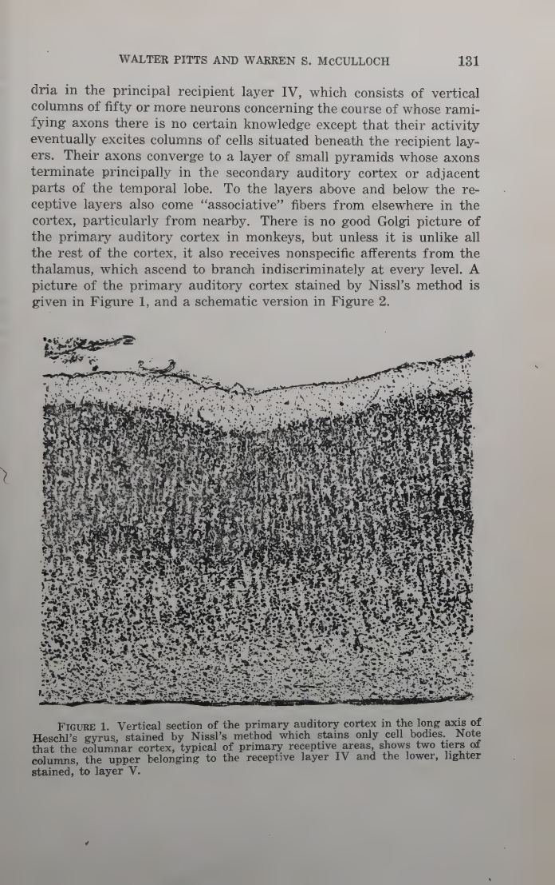
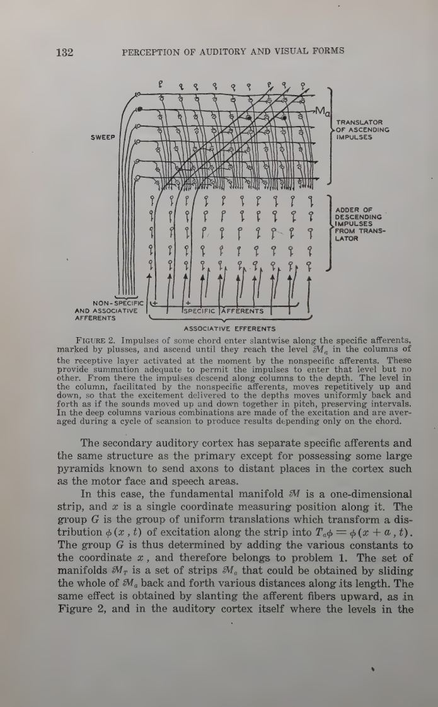
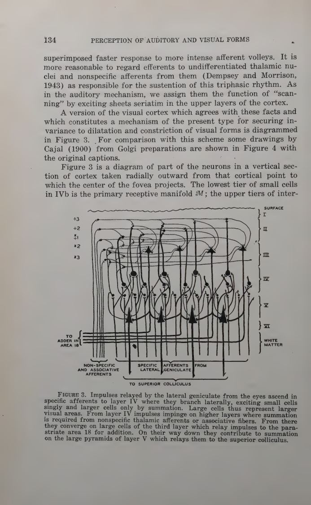
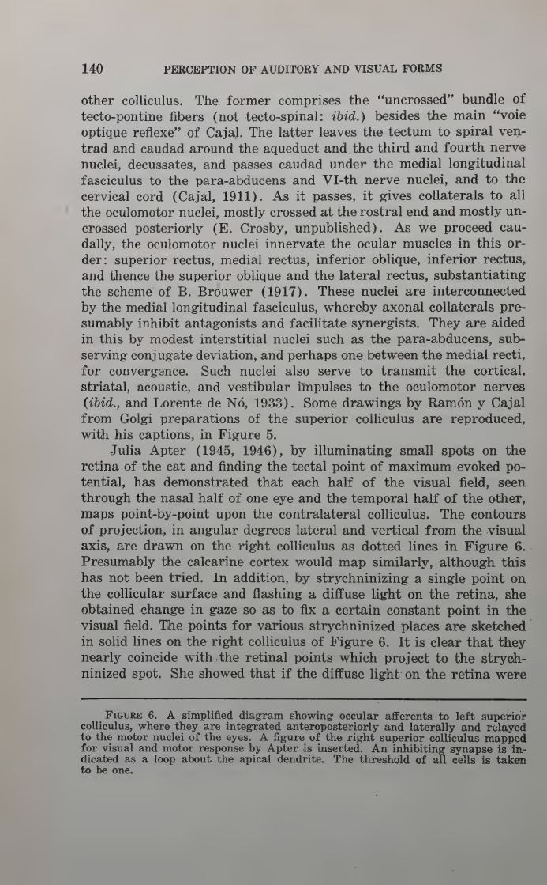

Bulletin of Mathematical Biophysics · Vol. 9 · 1947
How We Know UniversalsThe perception of auditory and visual forms
A chord is the same chord in every key. A square is the same square at every size. Pitts and McCulloch ask how a nervous net can produce one output for every input in a group of transformations — and answer with averaging, scansion, and a reflex that centres the world.
Read the plateThe thesis
To know a universal is to be invariant under a group of transformations.
The paper begins with a definition that is almost mathematical in its calm: the equivalent apparitions of a figure “define a group of transformations that take the equivalents into one another but preserve the figure invariant.” A square translated is still a square; a chord transposed is still the same chord. Recognition is the production of an output that does not change when the group acts.
Two mechanisms follow. The first computes an average over the group: if the net can generate every transform and add a functional of each, the sum is invariant because the group merely permutes its own terms. The second is a reflex: it moves the eyes until the image is centred, selecting one canonical member of the group before the form is computed.
The deep move: “the exchangeability of time and space.” A net can scan a dimension serially instead of representing it spatially, trading time for the equivalent of another spatial dimension.
Laboratory 01 · averaging over a group
Make every transform. Add them. The sum cannot tell them apart.
Choose a shape and a group. The ghost outlines are the transforms; the glowing field is their average. Translation blurs position, dilation blurs size, rotation blurs orientation — and the average is the invariant signature the net can use.
The group-average machine
An output built from all the transforms of an input is unchanged when the input is replaced by any of its transforms. That is the whole trick — and the reason a finite net can know a universal.
The mechanism
Average the group, or centre the world.
The first mechanism is an average: let be the group of equivalences, let be a transform of the excitation pattern, and let assign a number to it. The sum over the group is invariant because applying only permutes the terms.
The second is a reflex arc. The superior colliculus computes the centre of brightness of the retinal image and moves the eyes until that centre coincides with the visual axis. The image is thereby reduced to one standard presentation — centred — before the cortex computes its form.
Equation (1). The group average. The output is invariant under every in , because the set of terms is unchanged by a group action.
Equation (4). The centre of brightness. The colliculus turns the eyes until reaches the origin; the reflex is a negative-feedback servomechanism.
Laboratory 02 · the centring reflex
Drag the light. The eyes follow the centre of brightness.
The colliculus does not see a picture; it computes a weighted centre. Move the spots or change their brightness. The bump on the collicular map and the eye position are both driven by the same integral — and the retinal error shrinks as the reflex succeeds.
Centre of gravity, on a colliculus
Drag any spot in the visual field. Brightness weights its contribution. The dashed crosshair is the weighted centre; the eyes turn until the retinal error is zero.
centre of brightness0.00, 0.00
gaze0.00, 0.00
retinal error0.000
The voice
Recognition is an abstraction, not a picture.
“The group-invariant spatio-temporal distribution of excitations which represents a figure need not resemble it in any simple way.”
“This device illustrates a useful general principle which we may call the exchangeability of time and space.”
“Genes can only predetermine statistical order, and original chaos must reign over nets that learn, for learning builds new order according to a law of use.”
“The output … will rarely resemble the thing it means any closer than a man's name does his face.”
“Both are independent of small perturbations at synapses of excitation, threshold, and synchrony, and are referred to particular appropriate regions of the nervous system, thus suggesting experimental verification.”
The paper itself
Pages from 1947
click to enlarge





Why it matters
Invariance is the first theory of representation.
This is the paper that makes “representation” a computational question rather than a metaphysical one. A representation is an invariant: a function of the input that is constant on the orbit of a group. The group can be translations, dilations, rotations, pitch shifts — or, later, the transformations that define an object category.
The two mechanisms also set a pattern that recurs throughout modern vision and audition: either average over the group, or actively canonicalise the input before processing it. The first is a convolutional involution; the second is attention as a servo. Pitts and McCulloch had both, in 1947, with the histology to match.
Read next: the statistical organization of nervous activity, where the group average becomes a general principle of brain order.